Scarves, charms and studio essentials for the textured hair community we’re building at Braid. As Chief Officer of Design, I designed and built our storefront: a mobile-first shop that carries the Braid brand into commerce. Scroll it right here in the phone, or open the full site.
Braid was inspired by an experience my teammates and I shared — navigating textured hair care, and the frustration of having to piece together advice from social media, blogs, and inconsistent product recommendations. There was no single trusted platform that provided personalized guidance for textured hair.
The Challenge
How might we effectively connect cosmetology students and people with textured hair who are seeking to learn techniques for styling and maintaining their hair, while also fostering a community within the industry?
The Pitch
Our Black Ambition application video.
02 — Why Now
The policy is catching up.
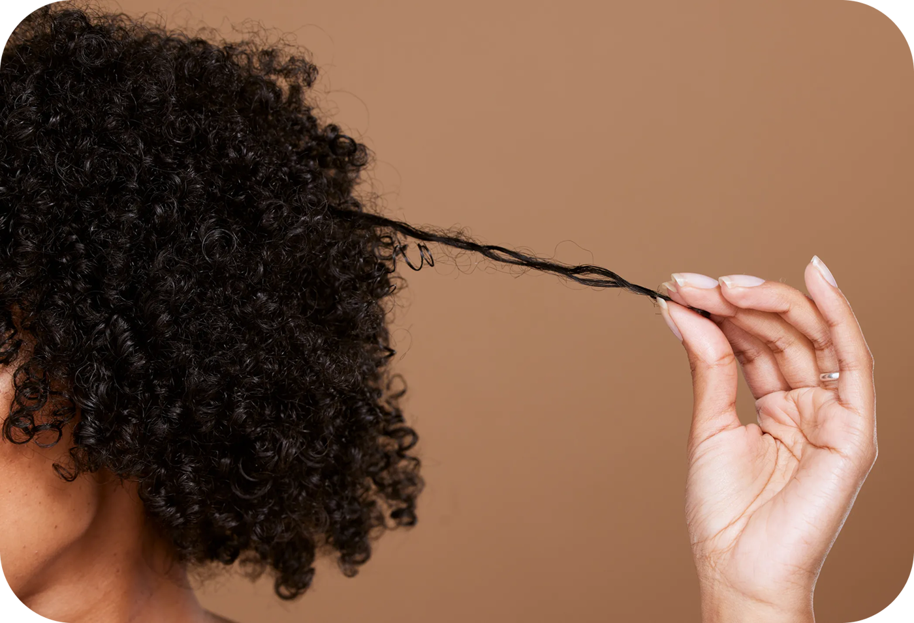
Legislative Change
The Texture Positive Act of 2024
Introduced by Rep. Nydia M. Velázquez, the Texture Positive Act incentivizes cosmetology schools to teach textured hair care. It also creates accessible educational resources for licensed professionals and for people learning to care for their own textured hair.
This is the gap Braid was built to fill. Schools are being pushed to teach this craft, and individuals are looking for credible resources. Braid is designed to serve both.
03 — My Role
Four founders, four pillars.
I led UX/UI design, owning product structure, user flows, and the visual system from concept through MVP. The four of us — Areanna Whittington, Gabrielle Vidal, Taiwo Ayedun, and me — ran the user research together, defined the product strategy, and developed the business plan and MVP roadmap.
Each of us leads a core pillar (design, product, marketing or operations), and we work together on our shared vision for textured hair education.
TitleCOD — Chief Officer of DesignI lead the vision, strategy and execution of all design work at Braid, shaping the user experience and the brand identity to drive the company’s growth and impact.
Tools
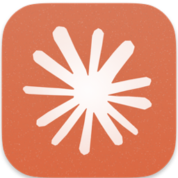
Claude Code
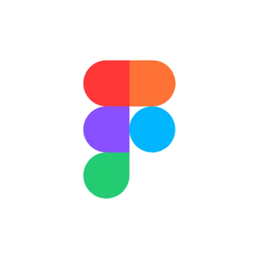
Figma
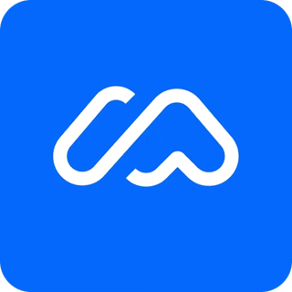
MazeBasecamp
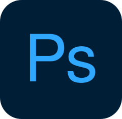
Photoshop
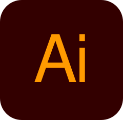
Illustrator
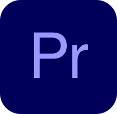
Premiere Pro
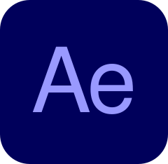
After Effects
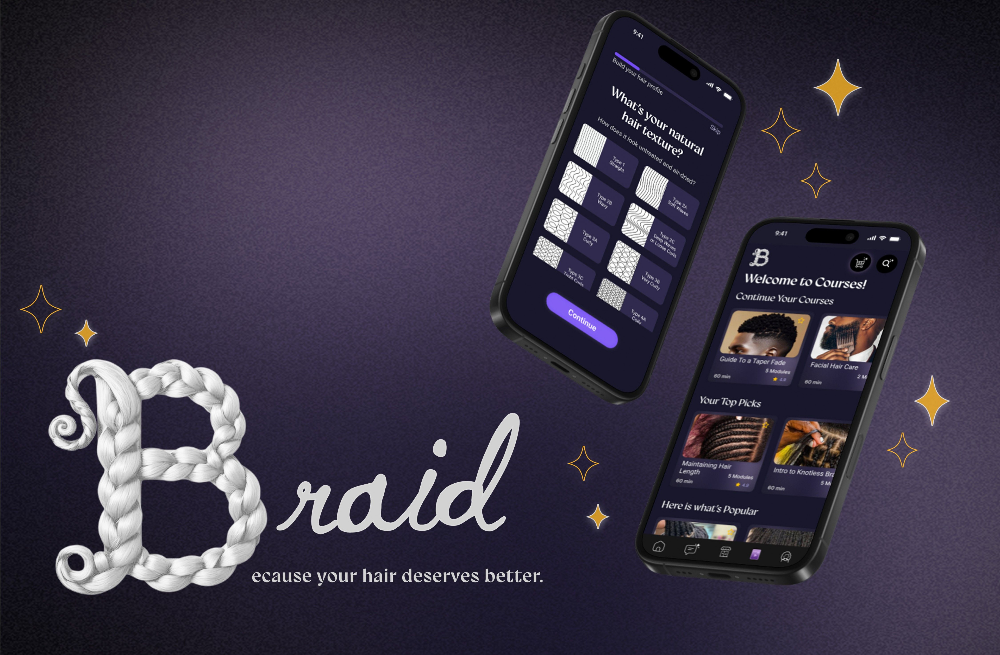
04 — Research
Two people, one missing place.
Our research kept pointing to two people. One has the expertise and needs a platform. The other has the curiosity and needs a guide.
Professional Hairstylist
Loctician · Age 40 · Chicago, IL
Needs
Access to ongoing education, a platform to showcase and grow her work, and a community for networking and collaboration.
Pain Points
Struggles with client education, staying competitive with trends, and limited marketing resources for growth.
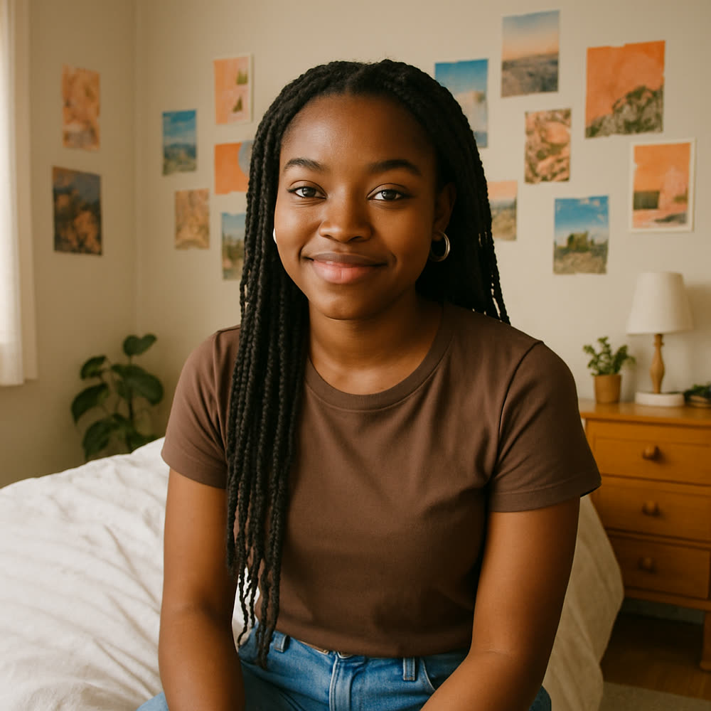
Knowledge Seeker
College Student · Age 21 · Chicago, IL
Needs
Clear tutorials, access to trusted textured hair professionals, and a supportive environment for her natural hair journey.
Pain Points
Struggles to find clear tutorials, connect with trusted textured hair professionals, and get reliable resources to care for her natural hair with confidence.
Competitive Analysis
Both personas already spend hours on the same four platforms, and still come away without what they need.
TikTok
StyleSeat
Instagram
YouTube
StyleSeat, TikTok, YouTube and Instagram all offer visibility, education and community around textured hair care. But they share the same problems: fragmented experiences, inconsistent quality and little personalized support. That leaves clear room for a more trusted, tailored solution.
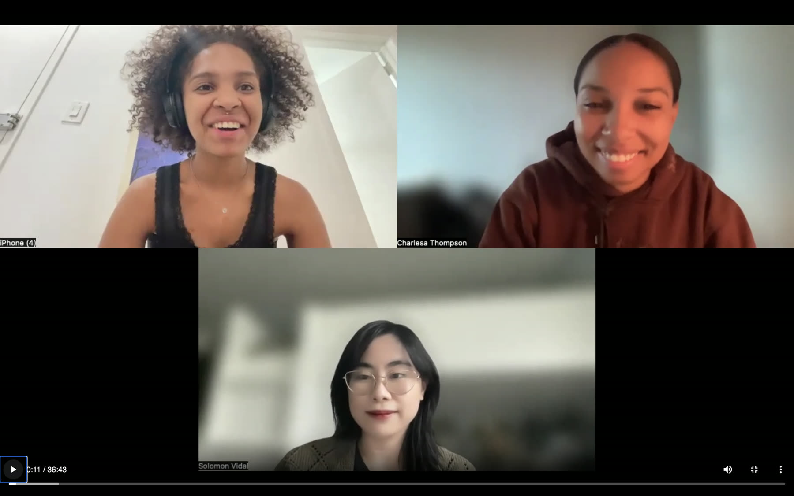
User Interviews & Experience Validation
We designed from conversations, not assumptions.
Our team has run multiple rounds of user testing, including surveys, one-on-one interviews and live product demo events like the ones pictured at the top of this page. Each round helps us refine the product to better meet our users’ needs.
What We Heard
A platform, like an app or website, featuring people with textured hair and have a big sister vibe.
— Knowledge Seeker
There’s a need to bridge the education gap regarding textured hair in hairstyling schools, which often focus only on theory.
— Hairstylist
I’ve wasted so much time and money at beauty supply stores on products I thought would work for my hair, but they didn’t.
— Knowledge Seeker
These three quotes became three design directions: a guide that feels like a big sister, hands-on courses that go beyond theory, and a calmer way to shop for products that actually work.
After synthesizing our research, we ran a Crazy 8’s sketching exercise to quickly explore feature ideas for Braid.
We then reviewed the concepts as a team, looking for patterns and the opportunities worth developing further. Ideas like sorting tutorials by hair type, community discussion boards and trend discovery all started on this table.
06 — Prototype
From sketch to structure.
Low-Fidelity Wireframes
I used what we learned from users to set the content hierarchy and layout for three core screens: the homepage, the AI interface and the course module.
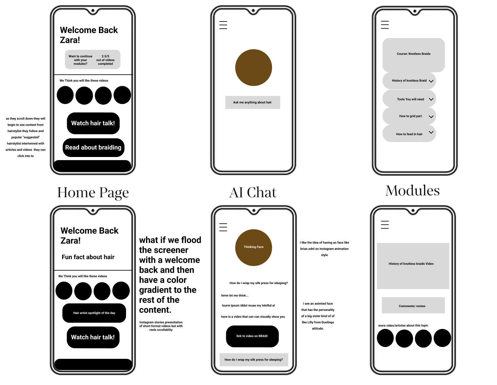
The homepage greets users by name and serves personalized content and video recommendations.
A personified AI chatbot reinforces the “older sibling” dynamic users said they wanted, so the guidance feels warm and relatable.
Segmented, modular courses introduce knowledge gradually, which reduces cognitive load and keeps learning intuitive.
Medium-Fidelity Wireframes
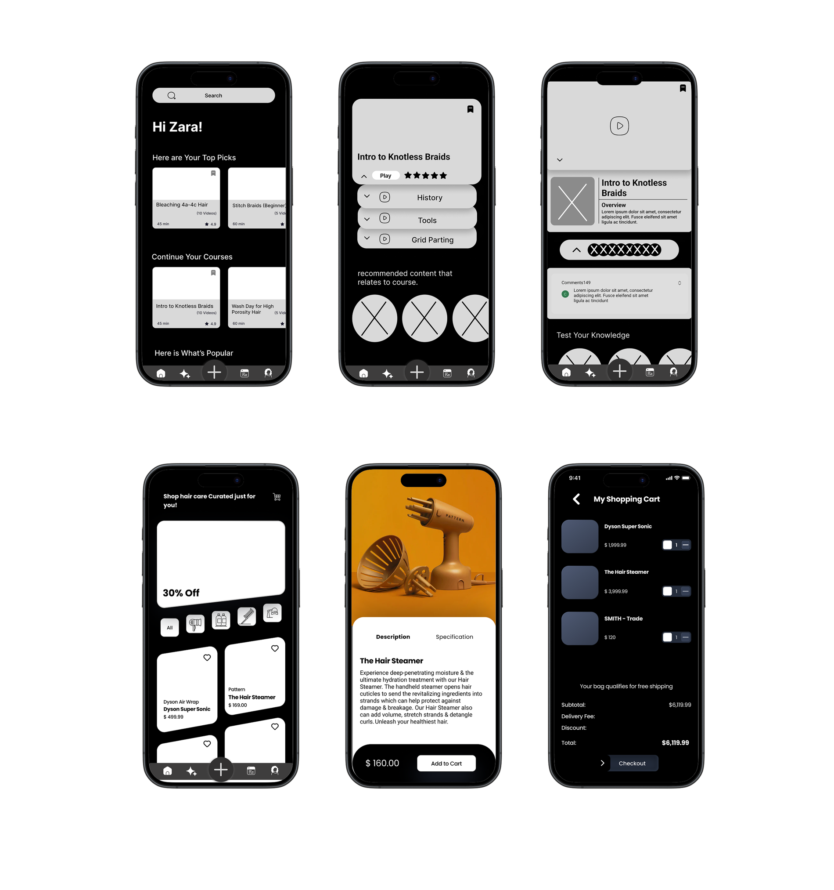
The Shop makes buying textured hair products simpler. It offers a calm, curated alternative to the often overwhelming beauty supply store.
Course modules borrow from familiar ed-tech interfaces, with more flexibility built into the information architecture.
Once we finalized the navigation bar, the team divided the features and screens so each of us could focus on one area. I own the Shop and Module screens.
07 — Solution
A haircare platform for textured hair.
To solve this, we built Braid, an AI-powered haircare platform designed for people with textured hair. The app helps users identify their hair type, build personalized routines, discover products, and receive step-by-step recommendations tailored to their specific hair goals.
Courses
From cultural history to hands-on mastery.
I designed an intuitive course flow that takes users from cultural theory to hands-on styling, featuring:
Seamless progress tracking with “Continue Your Course”
Personalized recommendations like “Your Top Picks” and trending lessons
A modular learning path that starts with cultural history and leads to technical mastery
Integrated course kits to support hands-on learning
Community features that build connection and support
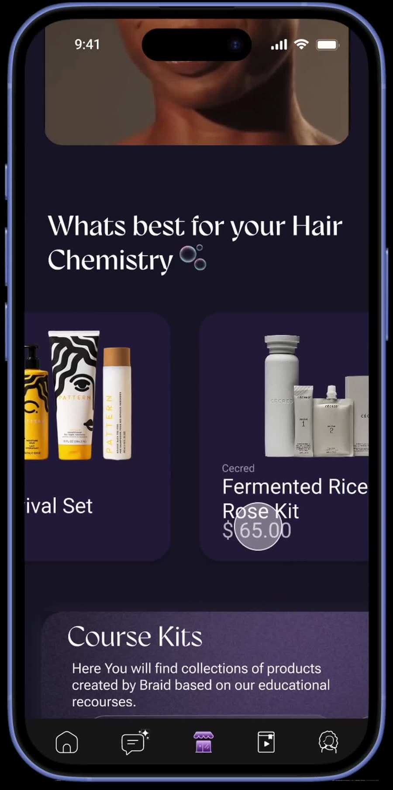
In-App Shop
Shopping with purpose, not guesswork.
I designed a lifestyle-driven shop that combines education and commerce to support each user’s textured hair care journey:
Personalized shopping with curated product kits tied to course content
A seamless blend of learning and buying (for example, the Hair Steamer is sold alongside related modules)
Product storytelling that leads with benefits, not just features
A clean, mobile-first layout that guides users through rituals, not just categories
An aspirational but accessible experience that helps users shop with purpose
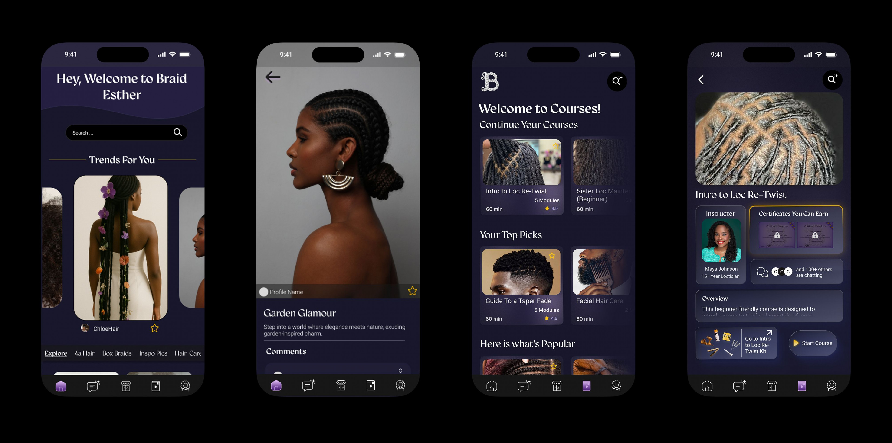
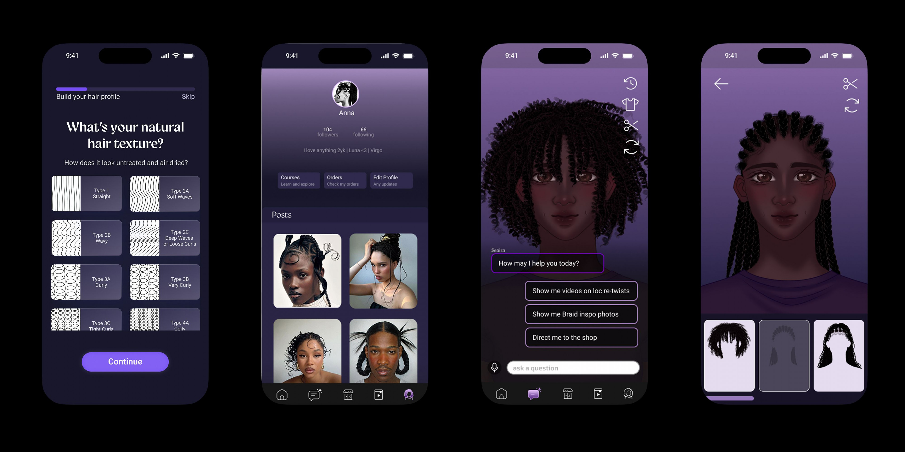
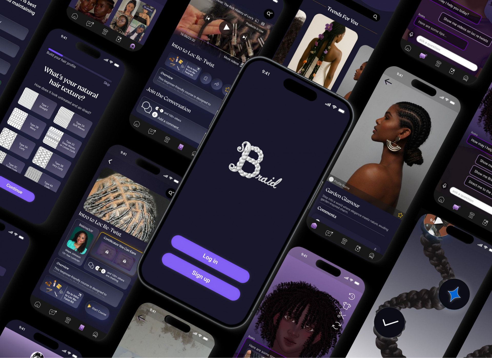
The full Braid app experience, designed by the team.
08 — Design System
A single source of truth.
Braid runs on a codified design system — typography, color, gradients, spacing, elevation, glass, and component patterns all live as tokens, so the app stays consistent across every screen and breakpoint.
What began as a classroom project is now a registered LLC with copyright protection, and we’re just getting started.
As a team, we’re applying to grants and competitions to bring Braid to life. We believe textured hair education should be accessible, empowering and everywhere. Our users deserve this, and we’re doing the work to make sure they get it.